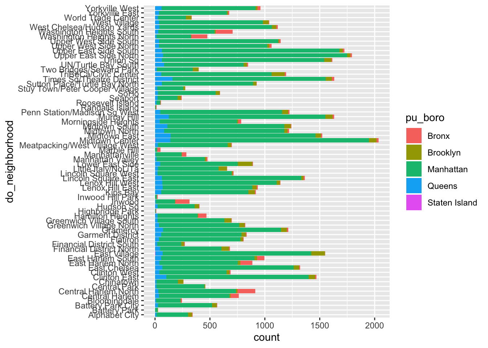

Importing data
Reimporting data from csv (trying to make sure that it works)
vday_green_taxi <- read_csv("./data/vday_green_taxi.csv")## Parsed with column specification:
## cols(
## .default = col_double(),
## pickup_date = col_date(format = ""),
## pickup_time = col_time(format = ""),
## dropoff_date = col_date(format = ""),
## dropoff_time = col_time(format = ""),
## store_and_fwd_flag = col_character(),
## ehail_fee = col_logical()
## )## See spec(...) for full column specifications.vday_yellow_taxi <- read_csv("./data/vday_yellow_taxi.csv")## Parsed with column specification:
## cols(
## .default = col_double(),
## pickup_date = col_date(format = ""),
## pickup_time = col_time(format = ""),
## dropoff_date = col_date(format = ""),
## dropoff_time = col_time(format = ""),
## store_and_fwd_flag = col_character()
## )
## See spec(...) for full column specifications.vday_for_hire_vehicle <- read_csv("./data/vday_for_hire_vehicle.csv")## Parsed with column specification:
## cols(
## hvfhs_license_num = col_character(),
## dispatching_base_num = col_character(),
## pickup_date = col_date(format = ""),
## pickup_time = col_time(format = ""),
## dropoff_date = col_date(format = ""),
## dropoff_time = col_time(format = ""),
## pu_location_id = col_double(),
## do_location_id = col_double(),
## sr_flag = col_double()
## )yellow_taxi_vday_samp <- sample_frac(vday_yellow_taxi, size = 0.1) %>%
mutate(type = "yellow")
green_taxi_vday_samp <- sample_frac(vday_green_taxi, size = 0.2) %>%
mutate(type = "green")
for_hire_vday_samp <- sample_frac(vday_for_hire_vehicle, size = 0.1) %>%
mutate(type = "for hire")Merge datasets
zone = read_csv("./data/taxi_zones.csv")## Parsed with column specification:
## cols(
## zone_id = col_double(),
## borough = col_character(),
## zone = col_character(),
## x = col_double(),
## y = col_double(),
## shape_length = col_double(),
## shape_area = col_double()
## )transport = bind_rows(yellow_taxi_vday_samp, green_taxi_vday_samp, for_hire_vday_samp)
transport_final = left_join(transport, zone, by = c("pu_location_id" = "zone_id")) %>%
rename(pu_neighborhood = zone,
pu_boro = borough) %>%
left_join(., zone,
by = c("do_location_id" = "zone_id")) %>%
rename(do_neighborhood = zone,
do_boro = borough) %>%
select(-ends_with("location_id")) %>%
filter(do_boro == "Manhattan") Add duration variable
transport_final = transport_final %>%
mutate(
pu_time = paste(pickup_date, pickup_time, sep = " "),
do_time = paste(dropoff_date, dropoff_time, sep = " "),
duration = as.numeric(difftime(do_time, pu_time, units = "mins"))
) %>%
select(-do_time, -pu_time, -do_boro)Probing for outliers (potentially false data records)
test = transport_final %>%
filter(duration > 100 & duration == 0) Eyeballing (outlier) test dataset, we decided to get rid of duration = 0 and duration > 150
Probing into how many NA’s are there (Bronx and Staten Island pick-up locations)
length(transport_final$pu_neighborhood[is.na(transport_final$pu_neighborhood)])
# There are 1613 pickups happening in the Bronx and Staten IslandMake a heatmap for tips based on do and pu neighborhoods
library("gplots")##
## Attaching package: 'gplots'## The following object is masked from 'package:stats':
##
## lowess#prepare data
tp_heatmap_tip =
transport_final %>%
filter(pu_boro == "Manhattan") %>%
select(do_neighborhood, pu_neighborhood, tip_amount) %>%
group_by(do_neighborhood, pu_neighborhood) %>%
summarize(avg_tip = mean(tip_amount)) %>%
ungroup() %>%
distinct() %>%
pivot_wider(
names_from = pu_neighborhood,
values_from = avg_tip
) %>%
mutate_if(is.numeric , replace_na, replace = 0)
m_tip <- as.matrix(tp_heatmap_tip[, -1])
rownames(m_tip) <- tp_heatmap_tip$do_neighborhood
heatmap.2(m_tip, scale="none", density.info="none", trace="none", hclustfun = hclust)Make a heatmap for count of drop-offs for drop-off and pick-up locations in manhattan
tp_heatmap_count =
transport_final %>%
filter(pu_boro == "Manhattan") %>%
select(do_neighborhood, pu_neighborhood) %>%
group_by(do_neighborhood, pu_neighborhood) %>%
summarize(count = n()) %>%
ungroup() %>%
filter(count > 20) %>%
pivot_wider(
names_from = pu_neighborhood,
values_from = count
) %>%
mutate_if(is.numeric , replace_na, replace = 0)
m <- as.matrix(tp_heatmap_count[, -1])
rownames(m) <- tp_heatmap_count$do_neighborhood
heatmap.2(m, scale="none", density.info="none", trace="none", hclustfun = hclust)
Load necessary packages for network building
library(GGally)## Registered S3 method overwritten by 'GGally':
## method from
## +.gg ggplot2##
## Attaching package: 'GGally'## The following object is masked from 'package:dplyr':
##
## nasalibrary(network)## network: Classes for Relational Data
## Version 1.15 created on 2019-04-01.
## copyright (c) 2005, Carter T. Butts, University of California-Irvine
## Mark S. Handcock, University of California -- Los Angeles
## David R. Hunter, Penn State University
## Martina Morris, University of Washington
## Skye Bender-deMoll, University of Washington
## For citation information, type citation("network").
## Type help("network-package") to get started.library(geomnet)Try to build a network with transport data
transport_final_mini =
transport_final %>%
sample_frac(0.2)
tp_list =
list("edges" = transport_final_mini[c("do_neighborhood", "pu_neighborhood")] %>% drop_na(),
"vertices" = transport_final_mini[c("do_neighborhood", "pu_boro")] %>% drop_na())
tp.net <- network(tp_list$edges[, 1:2], directed = FALSE)
# create node attribute
tp.net %v% "do_neighborhood" <- as.character(
tp_list$vertices[ network.vertex.names(tp.net), "do_neighborhood"]
)
# create plot for ggnet2
set.seed(100)
ggnet2(tp.net, labelon = TRUE,
size = 1, vjust = -0.6, mode = "kamadakawai", label.size = 1)